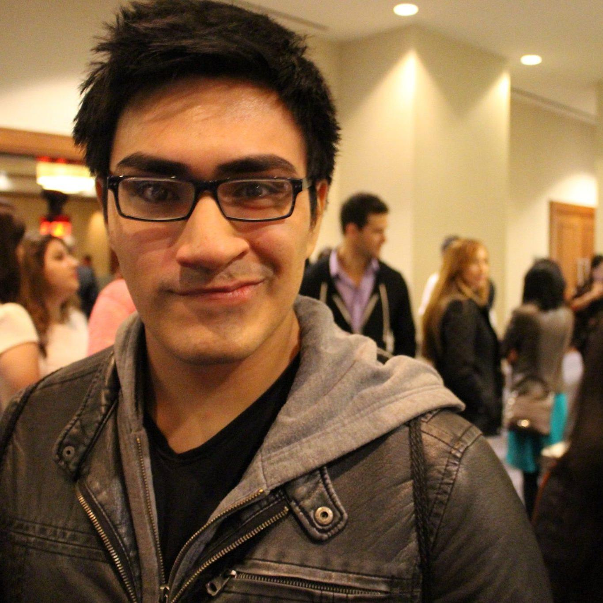

Bio: Senior at UT Austin. Major in CS. Hobbies include sports, games, music, and pets.
Major Responsibilities: Data Collector, UI/UX Front End Development
No. of commits: 6
No. of issues: 8
No. of unit tests: 2
Bio:Many, if not most, people aspire to become a great astronaut, a renowned doctor, or careers of the like. I admire those people and have great respect for their desires but I'm not most people. I life my life by rule that complacency kills. While I too have an ultimate goal to reach, my main focus has always been to improve every aspect of myself in order to achieve said goal. This rule stems from my adolescent obesity where I peaked to 265 lbs in my Junior year of high school. During my Senior year of high school I ended up going on a diet which led me to the gym in my first year of college. Four years later, and at one point 100 lbs lighter, I have continued my new-found lifestyle of weightlifting where I aim to improve myself every single day physically. This love for change and improvement inevitably brought out my passion of technology and programming. Being able to harness the ability to tinker and make changes to whatever you can think of is why I have been pursuing my degree in the field of Computer Science.
Major Responsibilities: Backend data modeling and frontend html.
No. of commits: 17
No. of issues: 8
No. of unit tests: 9

-

Bio: My mom is Mexican, my dad is Peruvian, and I was born in Mississippi. Life is interesting. I didn't even know how much I liked coding until my first computer science class in high school, but almost immediately after I've been hooked. Logic puzzles have always been my thing, and pretty soon I'll be able to get paid for it too. I always enjoy learning new skills, and throught most of my college career I've passed through many different clubs. Ju-jitsu, Quidditch, ACM (comp sci club), APO (service organization), Longhorn Salsa, Texas Latin Dance, Texas Jugglers, Austin Acro-yoga, and with a splash of capoeira I practically joined a new one every semester. No regrets though, because however tried I may be at the end of the week I know I've made personal progress and have met some really amazing people along the way.
Major Responsibilities: Backend server development
No. of commits: 2
No. of issues: 2
No. of unit tests: 2
Bio: Senior at UT Austin majoring in CS. I enjoy rock climbing, biking, and a occasional game of league of legends
Major Responsibilities:Front End Development
No. of commits: 2
No. of issues: 2
No. of unit tests: 2
Total No. of commits: 33
Total No. of issues: 22
Total No. of unit tests: 9
Apiary API: https://github.com/jeongwook/cs373-idb/blob/dev/apiary.apib
Github Issue Tracker: https://github.com/jeongwook/cs373-idb/issues
Github Repo: https://github.com/jeongwook/cs373-idb/tree/dev
Github Wiki: https://github.com/jeongwook/cs373-idb/wiki